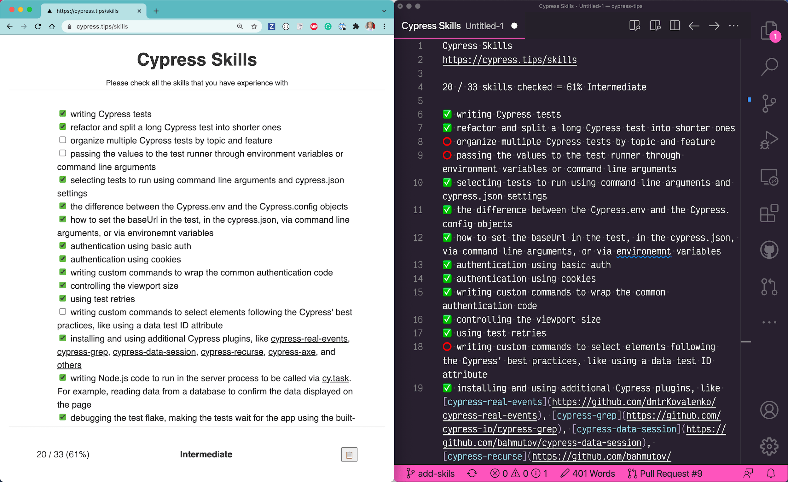

Imagine you are trying to get a job as a test engineer with a focus on writing Cypress tests. What do you need to know? Here is what I would suggest you learn.
Tip: when applying to an open position, you do NOT have to know 100% of the list below. I would hire anyone who has experience with most points below, and who has a plan to learn the rest.
Skills
- writing Cypress tests
- refactor and split a long Cypress test into shorter ones
- organize multiple Cypress tests by topic and feature
- passing the values to the test runner through environment variables or command line arguments
- selecting tests to run using command line arguments and
cypress.jsonsettings - the difference between the
Cypress.envand theCypress.configobjects - how to set the
baseUrlin the test, in thecypress.json, via command line arguments, or via environemnt variables - authentication using basic auth
- authentication using cookies
- writing custom commands to wrap the common authentication code
- controlling the viewport size
- using test retries
- writing custom commands to select elements following the Cypress' best practices, like using a data test ID attribute
- installing and using additional Cypress plugins, like cypress-real-events, cypress-grep, cypress-data-session, cypress-recurse, cypress-axe, and others
- writing Node.js code to run in the server process to be called via cy.task. For example, reading data from a database to confirm the data displayed on the page
- debugging the test flake, making the tests wait for the app using the built-in retry-ability mechanism
- observing the calls the application makes using cy.intercept
- stubbing the network calls the application makes using cy.intercept, modifying the response, or using a fixture file
- loading and using fixtures using the cy.fixture command
- making calls from the tests to the REST endpoints using cy.request
- making calls from the tests to the GraphQL endpoints using cy.request
- setting up IntelliSense and using Cypress types to ensure the specs use the commands correctly
- recording the tests on Cypress Dashboard
- running Cypress on CircleCI using Cypress CircleCI Orb running Cypress tests in parallel on CircleCI
- running Cypress using its GitHub Action
- accessing the data exposed by the application through the “window” object
- calling the application code from the test (called “app actions”)
- setting up 3rd party visual testing using a Cypress plugin, following the visual testing guide
- instrumenting the application source code and using the Cypress code coverage plugin to find the features not currently covered by any tests.
- writing API tests using Cypress, see the information at cy-api plugin
- generating the Cypress dynamically from the fixture files
- writing React component tests using Cypress component testing feature
Good news
The above list might seem long. But here are two things to remember:
- It gives you an idea of gaps in your knowledge, so you can fill them quickly
- All these topics are documented really really well. See Cypress docs, Cypress examples, work through Cypress Basics Workshop, read my posts about Cypress, and watch my Cypress videos to learn everything there is to know. Even better: you can search across all this knowledge in a single place at cypress.tips/search. Start with free Cypress courses, then fill the gaps by searching.
JavaScript resources
To effectively code Cypress tests, you need to know JavaScript. I recommend the following free resources:
- Online tutorial Learn Javascript with small exercises
- Book Eloquent JavaScript
- Book Human JavaScript
- an entire collection of free JavaScript books at the Free Frontend site
- The Modern JavaScript Tutorial teaches you both JavaScript and HTML programming, and is available in several translations.
I have a blog post JavaScript books with additional links
You can also learn JavaScript by watching these videos:
- Learn JavaScript - Full Course for Beginners from freeCodeCamp
- Learn JavaScript by CodeAcademy
Update 1: Interactive skills form
I have put the above list of skills as a form at https://cypress.tips/skills. You can use this form for self-evaluation or when interviewing a candidate for a job that requires writing Cypress tests. Tip: use the "Copy to clipboard" button to get the skills report as plain text!

Watch the skills form explained in the video below